A canvas painted with the colours of nature Srinagar, the jewel in the crown of Jammu and Kashmir, is a city that whispers tales of timeless beauty and resilience. As the summer capital of this northernmost Indian state, it paints a mesmerizing picture where nature's grandeur meets centuries of rich culture. Imagine waking up to mist-kissed mornings on the shores of the iconic Dal Lake, where shikaras glide gracefully, their reflections dancing on the mirror-like waters.
Srinagar 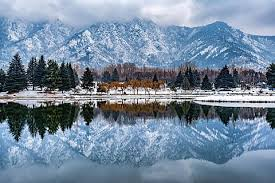 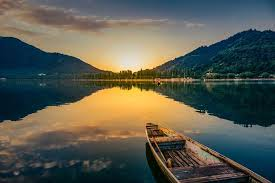 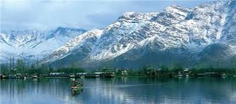 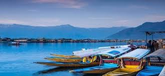 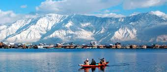Sonamarg is a hill station in Ganderbal district in the Indian state of Jammu and Kashmir. Sonamarg gives rise to The Three Sisters (Kashmir). In its vicinity lies the great Himalayan glaciers of Kashmir Valley namely Kolhoi Glacier and Machoi Glacier with some peaks of above 5000 meters: Sirbal Peak, Kolhoi Peak, Amarnath Peak and Machoi Peak. Sonamarg an alpine valley is situated at the bank of Nallah Sindh, 87 km north-east from Srinagar, it is a popular tourist destination, nestled with in the imposing Himalayan peaks.It lies at an altitude of 2800 metres above sea level.
sonmarg 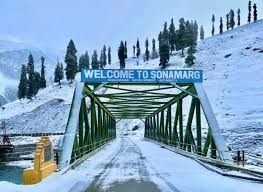 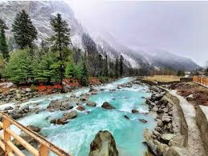 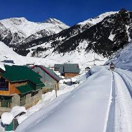 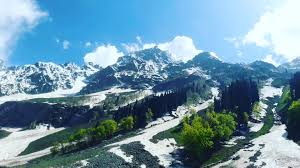Gulmarg literally means “Meadow of flowers”. Gulmarg is located 60 KMs away from Srinagar which is an hour and half journey by car. Gulmarg has attracted millions of tourists throughout its existence with the scenic beauty of the Himalayan Mountains in the back drop.
gulmarg 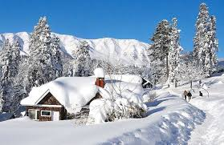 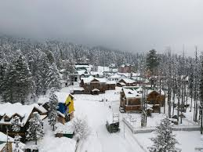 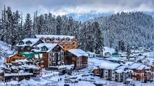